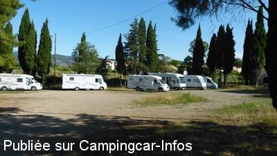

APN = Parking toléré jour/nuit de :
ANIANE
(N° 153)
Accès/adresse :
Lotissement du camp de Sauve
34150 ANIANE
34150 ANIANE
Latitude : (Nord) 43.6865° Décimaux ou 43° 41′ 11′′
Longitude : (Est) 3.5825° Décimaux ou 3° 34′ 57′′
Tarif : Gratuit
Services :
Tous commerces
Autres informations :
Ouvert toute l'année
Office de Tourisme Intercommunal Saint-Guilhem-le-Désert - Vallée de l'Hérault***
Saint Guilhem-le-Désert :+ 33(0)467 574 433
Maison du Grand Site : 33(0)4 99 61 73 01
oti@saintguilhem-valleeherault.fr
http://www.saintguilhem-valleeherault.fr/

Le 11/09/2012 par RH
de
Alain R
le 18/11/2015 :
Cette aire est un parking sans aucun service, très calme et ombragé, à 200m du centre. Nous y sommes restés 3 nuits du 13/11 . Gignac se trouve à 3 km par une voie verte, le pont du Diable à 3,5 km et ST Guilhème à 7 km.
Cette aire est un parking sans aucun service, très calme et ombragé, à 200m du centre. Nous y sommes restés 3 nuits du 13/11 . Gignac se trouve à 3 km par une voie verte, le pont du Diable à 3,5 km et ST Guilhème à 7 km.
de
Wally
le 30/03/2015 :
l'aire est juste un parking , rien pour vidanger , nous avons passé la nuit le 27/03/15 avec 4 cc trés calme ,je confirme hors saison y a rien pour garer les camping car pour visiter St Guilhem
l'aire est juste un parking , rien pour vidanger , nous avons passé la nuit le 27/03/15 avec 4 cc trés calme ,je confirme hors saison y a rien pour garer les camping car pour visiter St Guilhem
de
Michalu
le 13/03/2015 :
De passage le 3 mars dernier, il semble que cela se dégrade. Nous étions seul et ne sommes pas restés.
De passage le 3 mars dernier, il semble que cela se dégrade. Nous étions seul et ne sommes pas restés.
de
Béatrice775
le 11/05/2013 :
Cette aire est dans la verdure avec un peu d'ombre. Sympatique, il y a toujours quelques CC (la nuit et le lendemain midi, où nous y sommes retournés après quelques déboires déplaisants à St-Guilhem le désert : on n'y aime franchement pas les CC !).
seul endroit accueillant du coin avec toilettes propres et commerces proches.
n'oublions pas que c'est gratuit quand aux alentours des pseudos parking avec bus gratuit ou d'autres en réfection se fichent de vous.
J'étais allée à St Guilhemn il y a 20 ans. Dommage qu'un si beau village finisse comme ça : en mai nous ne somme quand même pas au coeur de l'été !
Cette aire est dans la verdure avec un peu d'ombre. Sympatique, il y a toujours quelques CC (la nuit et le lendemain midi, où nous y sommes retournés après quelques déboires déplaisants à St-Guilhem le désert : on n'y aime franchement pas les CC !).
seul endroit accueillant du coin avec toilettes propres et commerces proches.
n'oublions pas que c'est gratuit quand aux alentours des pseudos parking avec bus gratuit ou d'autres en réfection se fichent de vous.
J'étais allée à St Guilhemn il y a 20 ans. Dommage qu'un si beau village finisse comme ça : en mai nous ne somme quand même pas au coeur de l'été !
de
RH
le 11/09/2012 :
good for the night, no service but calm. For the day you can go to the parking at pont de diable (which is expensive for the night), free bus to Guilhem
good for the night, no service but calm. For the day you can go to the parking at pont de diable (which is expensive for the night), free bus to Guilhem
de
marion
le 16/08/2012 :
Le 28/07/2012, arrêt sur cette "aire" sans le vouloir Etat désastreux des lieux,il faut dire que cette ville est très sale, même les nouveaux parkings vers la poste sont à l'état d'abandon ..fuyons et vite...bruno
Le 28/07/2012, arrêt sur cette "aire" sans le vouloir Etat désastreux des lieux,il faut dire que cette ville est très sale, même les nouveaux parkings vers la poste sont à l'état d'abandon ..fuyons et vite...bruno
de
Anita Boulanger
le 20/04/2012 :
A éviter absolument. Il s'agit pour moi d'un véritable terrain vague......
A éviter absolument. Il s'agit pour moi d'un véritable terrain vague......
de
JEANMON
le 29/10/2011 :
stationnement transféré entre ANIANE et ST GUILHEM LE DESERT borne eau électricité, mais hors période faire de la marche pour aller à ST GUILHEM la difficulté on doit longer une route très fréquentée mais le détour en vaut la peine village remarquable
stationnement transféré entre ANIANE et ST GUILHEM LE DESERT borne eau électricité, mais hors période faire de la marche pour aller à ST GUILHEM la difficulté on doit longer une route très fréquentée mais le détour en vaut la peine village remarquable
de
John Thilthorpe
le 08/12/2010 :
Revisited this site late October 2010.
There are now NO water or drainage facilities.
The area where they were has been asphalted and (permanently) fenced off.
The parking area is not in as good condition as it was.
Revisited this site late October 2010.
There are now NO water or drainage facilities.
The area where they were has been asphalted and (permanently) fenced off.
The parking area is not in as good condition as it was.